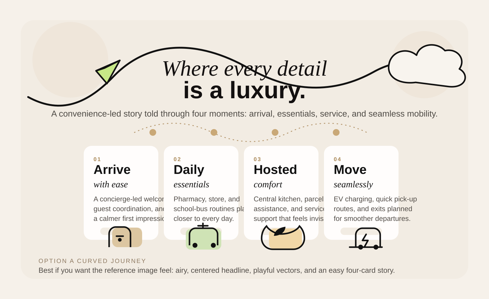
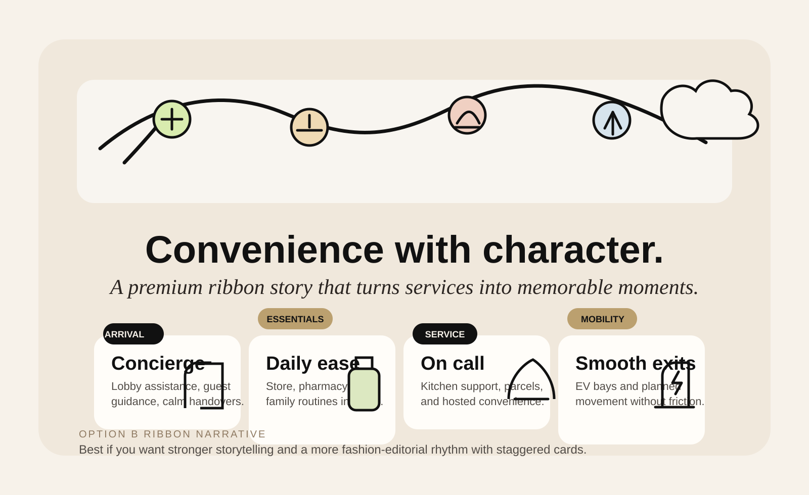
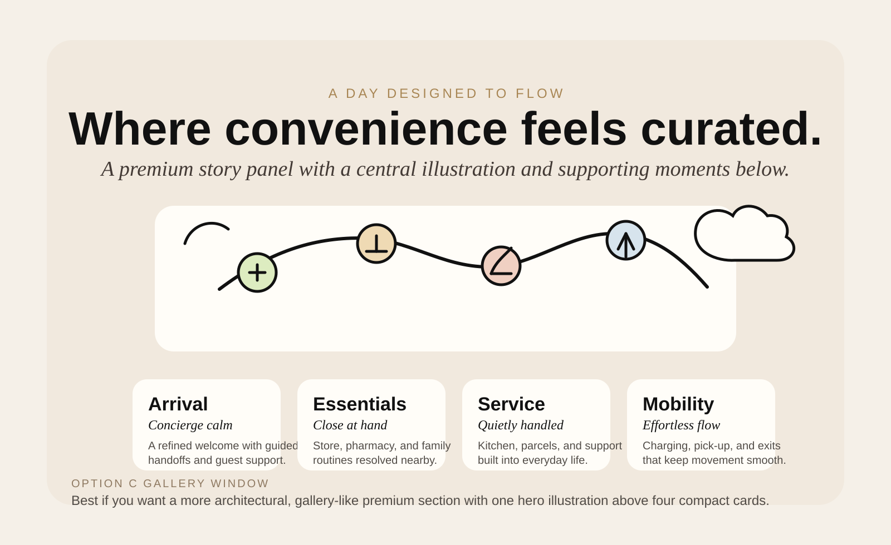

Premium Convenience Story Options
Three visual directions for upgrading the "Where every detail is a luxury." section into a four-card convenience story with vector-led storytelling. Pick the one that feels closest to the premium direction you want, and I will translate it into the live React section.


